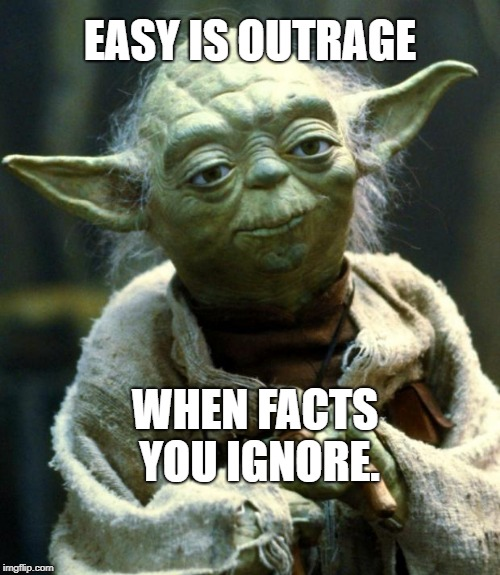

!!! Read Me !!!
Hello!
These are real posts gathered from the internet, these are all false claims, and you are given real facts which have been manually prepared
!!! You will not be able to interact with this post !!!
please scroll down below to the next post to click share to see how this extention will work!
Earlier today, one of our officers was shot while protecting our subway system. I am relieved to report he is in good condition now, and we have arrested the suspect who put so many lives in danger. I cannot thank these officers enough for their bravery.
A Factual Post:
A post that only has true facts, not based on theory or personal opinion

I don't believe the offical Holocost story anymore. I don't know what actually happened but I do know we have been lied to. If you can't criticize or even ask questions about a historical event without being labeled a "Nazi" & in some countries, arrested, something isn't right.